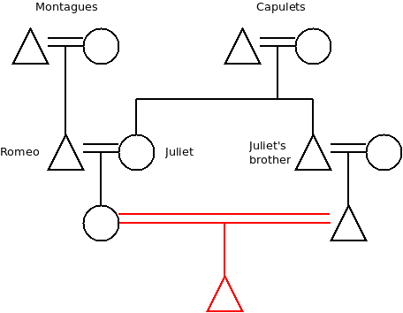
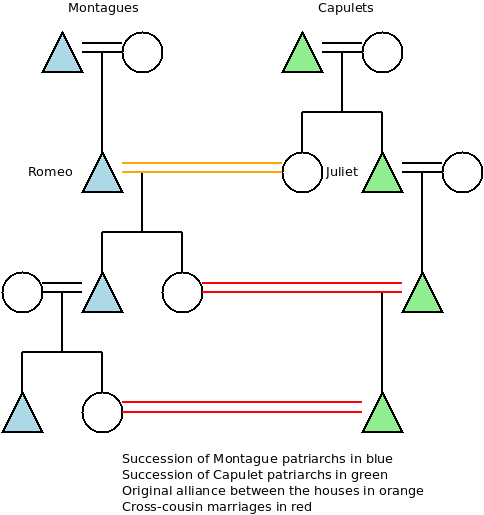
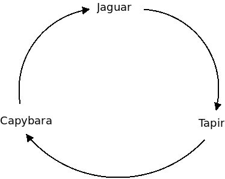

For those not familiar with Shakespeare's play, Romeo and Juliet is about two young people from two powerful renaissance families that happen to be engaged in a feud. Romeo and Juliet fall in love. A sequence of unfortunate events results in suicide of both protagonists. The families, shocked by death of their offspring, finally decide to end the feud.
Now, let's imagine that patriarchs of house Montague and house Capulet were already fed up with the feud. It hurt their economic interests and was generally unpleasant and tiring.
To solve the problem they've came up with the idea of marrying Juliet to Romeo. The two teenagers don't particularly like each other (forbidden fruit is sweet, etc.) but, having no other romantic interests, they obey and enter the wedlock.
But wait, you say, how is Romeo & Juliet's wedding supposed to stop the feud? It may create some kind of bond between the houses but it's not going to be a particularly strong bond. Why would a marriage of two characters that are in no way central to the feud have any effect on it? It is definitely not going to stop Juliet's cousin twice removed stabbing Romeo's uncle in a back alley. Or is it?
While not immediately obvious the answer is surprisingly simple: Romeo and Juliet will at some point have kids that will be both Montague and Capulet. If the patriarch of house Capulet does something to promote Capulets he can't do it, in the long run, without also promoting house Montague. If the patriarch of house Montague hurts house Capulet he is also, in the long run, inflicting the wound on house Montague itself.
The existence of a single heir to both houses aligns their incentives.
And if you ever looked at cryptographic protocols, especially in those that underlay cryptocurrencies, the phrase "alignment of incentives" should ring a bell. Are we looking at something exploitable here? And by "exploitable" I don't mean "something that can be attacked" but rather "something that could be used to build a cryptographic protocol". The hint is a little bit vague though. Let's thus first have a look at some more complex kinship arrangements.
Imagine Juliet has a brother. He'll eventually become the patriarch of house Capulet. He's related to Montagues — Romeo and Juliet's kids are his nephews and nieces after all — but the relationship is not as strong as if his own kids were involved. If the incentives are stong enough he may still turn against his sister's kids and start the feud anew.
Enter preferential cross-cousin marriage. In anthropology of kinship systems, this is a staple. In many societies there's a strong preference for a person to marry the child of their mother's brother or the child of thier father's sister. In case of Montagues and Capulets, Juliet's brother, now head of house Capulet, will be obliged to marry his son to Juliet's daugther, i.e. to a Montague.

If you think it through, this rule ensures that the alliance made between the two families will be renewed and reinforced in every subsequent generation.

Yes, this does sound like a kind of twisted argument that you would use when reasoning about incentives involved in a cryptocurrency. But before we proceed let's have a look at even more complex system.
So, imagine a tribe living in Amazon Jungle. The tribe is split into three smaller clans: Jaguars, Tapirs and Capybaras. Sons stay in their father's clan. Jaguar daughters, however, are obliged to marry Tapir men. Tapir daughters will be married into Capybara clan. Capybara women, in turn, will be married into Jaguar clan.

Think for a while about what it means: If you are a Jaguar, your father is also a Jaguar, but your mother is a Tapir. Out of your four grandparents, one is Jaguar, two are Tapirs and one is Capybara. You will marry a Capybara woman. Your sons will remain in Jaguar clan, but your daugthers will marry into Capybara clan. Their daughters, in turn, will marry into Tapir clan.
In other words, while the integrity of each clan is maintained by patrilieality (sons inherit the clan affiliation from their fathers), each person has close relatives in the other two clans. The ultimate effect is that the entire tribe, although separated into smaller clans, resembles an intricately woven fabric that is almost impossible to split.
All right, you have an idea. But can this be actually used to create a novel kind of cryptographic protocols?
Well, it's not that straightforward. My feeling is that there's a new kind of primitive involved. It's not the kind of primitive that you find in classic cryptography: "This statement must be true because otherwise the time comparable to the age of universe would be required to compute it." It's not the kind of primitive you find in cryptocurrencies either: "This statement must be true because otherwise the other party would lose $1,000,000." It's a primitive based on reputation instead: "This statement must be true because otherwise the other party would compromise the reputation it spent years building."
I have couple of practical ideas of how this may work but first one has to ponder what reputation means in the modern world and how exactly it functions. I'll try to write down some thoughts on that topic in the next instalment of this blog.
July 2nd, 2017